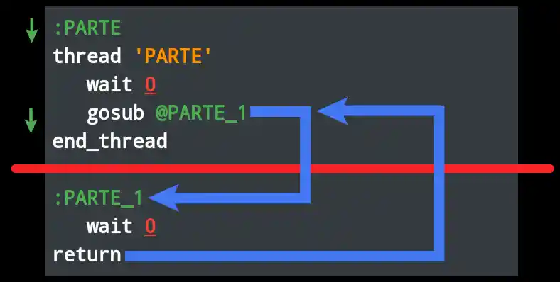
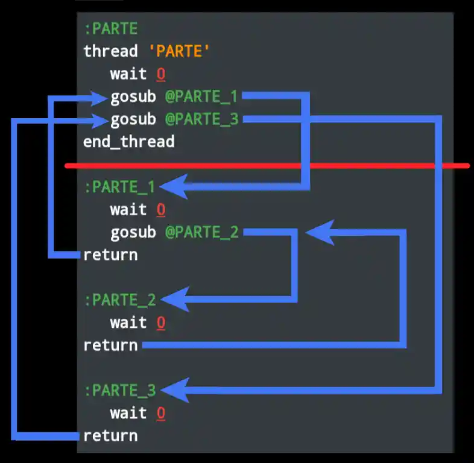

En este tutorial continuaremos explorando los hilos. Esta vez conoceremos los comandos gosub y return
gosub:
{
> gosub «etiqueta»
ó
> «etiqueta»()
}
gosub @PARTE_1
PARTE_1()
A simple vista podriamos creer que este comando salta a la etiqueta :PARTE_1, pero tiene una pequeña peculiaridad.
NOTA: A diferencia de
Con el comando jump, la pelota volverá al lugar de donde salio cuándo se encuentre con el retorno más cercano.
return ara que se regrese a su punto de partida.
Mira este pequeño guión para que entiendas cómo funciona:
:PARTE thread 'PARTE' wait 0 PARTE_1() end_thread :PARTE_1 wait 0 returnGráficamente se puede representar de la siguiente manera:  En la imagen podemos ver que la pelota primero pasará por 3 líneas y en la 4°, se encontrará con
gosub, lo que la ara saltar a la 7° línea, ya que aquí se encuentra la etiqueta @PARTE_1. Va más allá de 2 líneas y se encuentra con return. Lo que hace que la pelota se regrese a la línea donde estaba el gosub y continúa su camino, hacia la 5° línea y se encuentra con end_thread finalizando el código.
IMPORTANTE: Cualquier
Escribamos un guión más complejo, donde ayan más gosub requiere un retorno obligatorio con el comando ruturn.
gosubs, y observemos el recorrido de la pelota:
:PARTE thread 'PARTE' wait 0 PARTE_1() PARTE_3() end_thread :PARTE_1 wait 0 PARTE_2() return :PARTE_2 wait 0 return :PARTE_3 wait 0 returnGraficamente se podria representar de la siguiente manera:  Como ve, estos saltos tambien pueden ser anidados. Osea, colocados dentro de otros
gosubs.Arriba había 1
gosub anidado ( @PARTE_2). El resto se encontraban en el mismo nivel de anidación.
IMPORTANTE: Los anidamientos estan limitados al 8 nivel de
Con esto acabaríamos con los conceptos básicos de los flujos de comandos.
Si tiene alguna pregunta, hágala por [Discord](https://discord.gg/GBkEqSE2jY)
gosubs en las secuencias de comandos del SCM